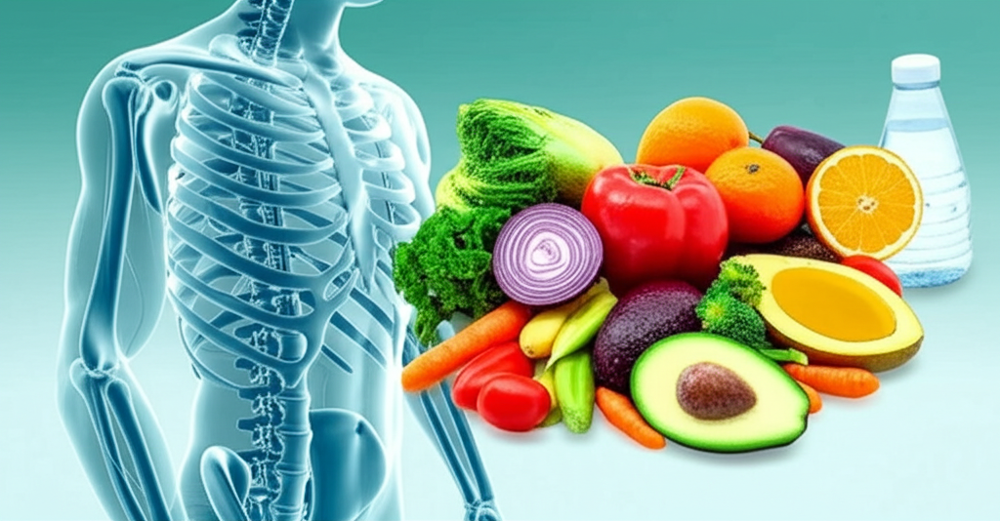

近期新聞聚焦於健康、運動以及生活習慣對於預防疾病和改善生活品質的重要性。高血壓、脂肪肝、肥胖等問題日益普遍，運動和飲食控制成為關鍵的解決方案。同時，關於中風預防、疲勞恢復以及特定運動對於降低血壓的討論也備受關注。
傳統觀念認為跑步和游泳是最佳的降血壓運動，但最新研究顯示，一些居家運動，例如特定類型的阻力訓練，只需每次進行45秒，也能有效降低血壓。專家建議，運動過程中應注意血壓控制，收縮壓不超過210毫米汞柱，舒張壓不超過其上限值。這為無法進行高強度運動的人群提供了更便捷有效的選擇。
長時間躺床休息並不能有效恢復疲勞。醫生建議，規律的活動反而能提振身心，穩定血壓、消化和睡眠。這強調了積極的生活方式對於維持整體健康的重要性，而不是被動地休息。
台灣約有30%的民眾患有脂肪肝，它容易導致糖尿病、高血壓和高血脂等問題。預防脂肪肝的關鍵在於控制體重和腰圍，減少內臟脂肪。體重減少5~10%即可顯著改善脂肪肝。這突顯了早期預防和生活方式干預在控制慢性疾病風險中的重要作用。
新聞報導反映出健康意識的日益提升，以及人們對於運動、飲食和生活習慣在疾病預防和健康管理中的重要性的認識。從降血壓運動的選擇到脂肪肝的預防，再到疲勞恢復的方式，都強調了主動參與健康管理和採取積極生活方式的重要性。透過科學的運動方式和合理的飲食控制，可以有效降低慢性疾病的風險，提升生活品質。